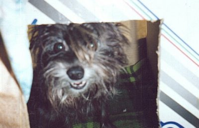
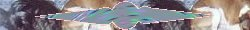
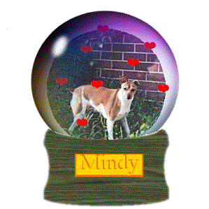
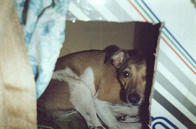
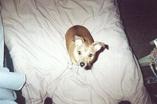
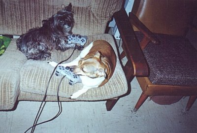
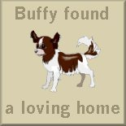
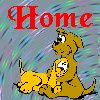

"Woof!!
My name is Angie and as you can
see
I am the boss. Woof Woof!!!"
"I
adopted this family about 9 years ago, when
I
realised that not all humans are cruel to
dogs.
Here is a pic of me in my little house that
Adam
made for us."


"Woof!!
I'm Mindy and I'm just over one year
old.

When
these humans visited the Animal
Welfare
in 1999 I tried my cute little doggie
eyes
on them, and it must've worked! Woof!!"
"Here's
a pic of me in the same house. I love
sitting
in it and getting the warm sun shine through the window on me."


"We
aren't really spoilt!"

"We
even get to play the playstation!"


Please
sign the guestbook before you leave.
"Woof!"
The
backgrounds here were made by our human mum. LOL.
updated
9/14/00